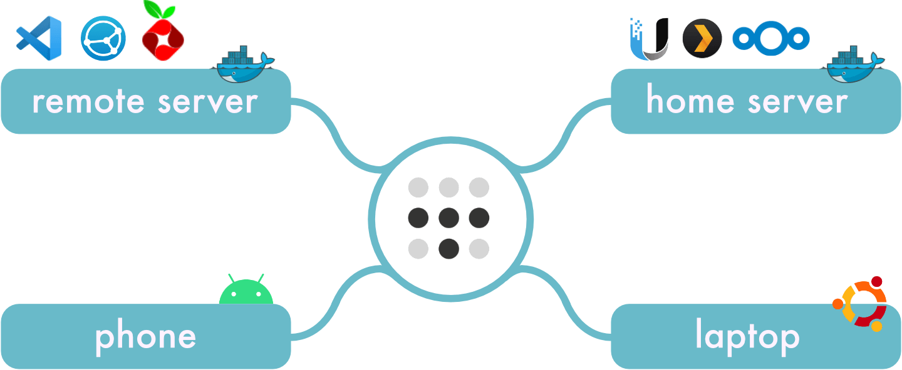
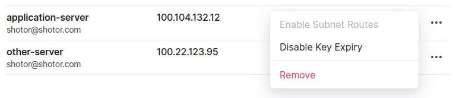
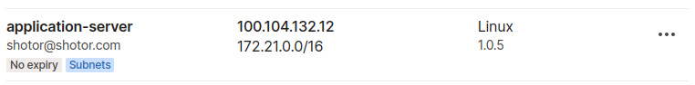
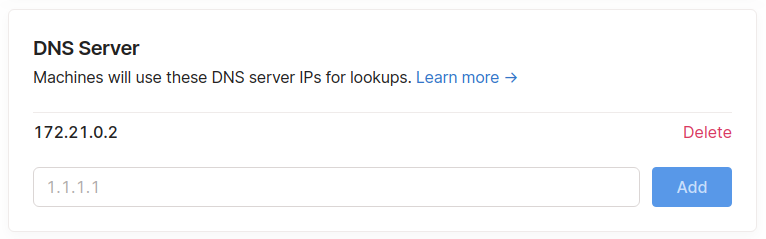

Run your own mesh VPN and DNS with Tailscale and PiHole
I've been using Tailscale for a while to connect all my devices together in a mesh network. I use it to access web applications running on one of my servers (home or remote), from any of my devices (phone, laptop, tablet). Tailscale makes this really easy. Install it on your devices and it will connect your devices together and assign them unique ip addresses. To see how it works, check out their blog post that goes in depth.
Recently I wanted to add PiHole private DNS to my setup in order to increase security and privacy while browsing. And also to assign readable hostnames to each device. This way I don't have to memorize ip addresses or mess with local host files anymore.
A simplified view of my setup:

We're going to run PiHole in a Docker container on it's own subnet. We'll expose this subnet on our network by turning one of our servers into a Tailscale subnet relay node. Finally, we'll set the DNS to be used by all our Tailscale devices through the Tailscale admin console.
If you don't want to run your own DNS, but just want readable names for your devices. You can skip this guide and use Tailscale Magic DNS instead. It automatically assigns fixed hostnames to all your devices. While it's a really cool feature, with PiHole you get more flexibility, as well as privacy and security features.
Setting up PiHole
There are a few ways to setup PiHole. In this case I'm running it with Docker on a remote server. But this guide also works if you're hosting PiHole directly. The important part is to have PiHole accessible on the Tailscale mesh network. To do this you can install Tailscale on the server running PiHole, or setup a subnet relay node (see next section).
First I'm going to create a new Docker bridge network, because I don't want bind ports from the Docker container to my host machine. This way I can host PiHole completely isolated on a separate internal IP, and use the default port for DNS (53).
docker network create \
--driver=bridge \
--subnet=172.21.0.0/16 \
--gateway=172.21.0.1 \
-o "com.docker.network.bridge.name"="docker-apps" \
-o "com.docker.network.bridge.enable_ip_masquerade"="true" \
-o "com.docker.network.bridge.enable_icc"="true" \
-o "com.docker.network.driver.mtu"="1500" \
appsIn my case I also had to allow this network to access the internet by modifying iptables.
sudo iptables -t nat -A POSTROUTING -s 172.21.0.0/16 -j MASQUERADENow we can run a new PiHole docker container on this network. I'm also going to assign it a static IP address. That way we only have to configure it once as our DNS, and not every time the server restarts and the ip changes.
docker run -d \
--name pihole \
--network=apps \
--ip=172.21.0.2 \
-e TZ="Europe/Amsterdam" \
-v "{{PATH_TO_STORE_PIHOLE_DATA}}/etc-pihole/:/etc/pihole/" \
-v "{{PATH_TO_STORE_PIHOLE_DATA}}/etc-dnsmasq.d/:/etc/dnsmasq.d/" \
--dns=127.0.0.1 \
--dns=1.1.1.1 \
--restart=unless-stopped \
--hostname pi.hole \
-e VIRTUAL_HOST="pi.hole" \
-e PROXY_LOCATION="pi.hole" \
-e ServerIP="127.0.0.1" \
pihole/pihole:latestNow we have a working instance of PiHole running on our server. The only problem is we can only access it on this particular machine, because it uses an internal IP address. Any other device on our mesh network can't access this IP, yet.
Subnet Relay Node
With Tailscale we can expose internal ip addresses of a machine by turning the device into a relay node.
We restart Tailscale and instruct it to advertise the subnet we want to expose on the network.
sudo tailscale up --advertise-routes=172.21.0.0/16If you get errors, make sure IP forwarding is enabled.
echo 'net.ipv4.ip_forward = 1' | sudo tee -a /etc/sysctl.conf
sudo sysctl -p /etc/sysctl.confThen for our host machine we disable key expiry and enable subnet routes.

If everything went well you should see the subnet in the admin panel.

We can now access the subnet on any connected device. On Linux devices you'll have to enable this feature first:
sudo tailscale up --accept-routesNow go to http://172.21.0.2 on any of your devices to see PiHole running. Pretty cool, right?
Setting the DNS for all our devices
Exposing subnet routes is a really powerful feature. You can host applications on internal IP addresses on any of your servers, and access them directly from your devices - no port bindings or reverse proxying required.
But we can take it a step further by using PiHole as the default DNS for all connected devices. Simply put: Turn Tailscale on, and you instantly have access to all your self-hosted apps using readable names, and your browsing expires becomes more secure.
This part is very easy.
In the Tailscale admin console, we're going to click on the DNS tab. And add our PiHole IP address as the DNS. 
That's it. All our devices are now configured to use PiHole as the
primary DNS. You can see this by opening a website on a device and
checking the logs in the PiHole UI. Or by checking the contents of the
/etc/resolv.conf file.
On Mac/Linux:
cat /etc/resolv.conf
# resolv.conf(5) file generated by tailscale
# DO NOT EDIT THIS FILE BY HAND -- CHANGES WILL BE OVERWRITTEN
nameserver 172.21.0.2Note: We only configured 1 DNS. That brings the risk that if it goes down, you can't connect directly to any domain. The next step would be to run another PiHole instance on a different server within the network. This makes the DNS redundant and will avoid connection problems in case one of the nodes goes down. Another option is to log in to the Tailscale admin console and turn off the DNS feature.
Next Steps
Some things to consider doing next:
- Setup readable names for your apps. Click on Local DNS Records in the PiHole UI and start mapping your ip addresses. How about pi.hole to access the PiHole UI?
- Add new block lists to block more ads, trackers and malware, this one is quite popular.
- Run a second instance of PiHole, in case one malfunctions, and add it as the secondary DNS. Gravity-sync can help with synchronization of the PiHole instances.
- Add your home router to the mesh network, so any device connected to your router automatically uses PiHole. Note: you'll probably want a second instance of PiHole instance on a different server.
- Run some more apps. Here are some cool ones.
- Wait a couple of days and see how much traffic PiHole has managed to block. I've been running PiHole for a couple of days and it blocks around 20% of all the DNS requests made.